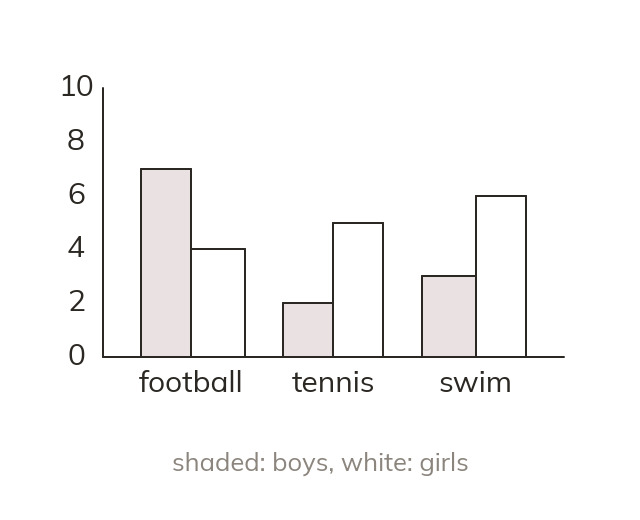

Side by side
A dual bar chart puts two bars side by side for each category. A key says which bar is which group. Then compare the groups category by category.
A dual bar chart puts two bars next to each other for each category, one for each group. A key says which bar is which, so the two groups can be compared category by category.